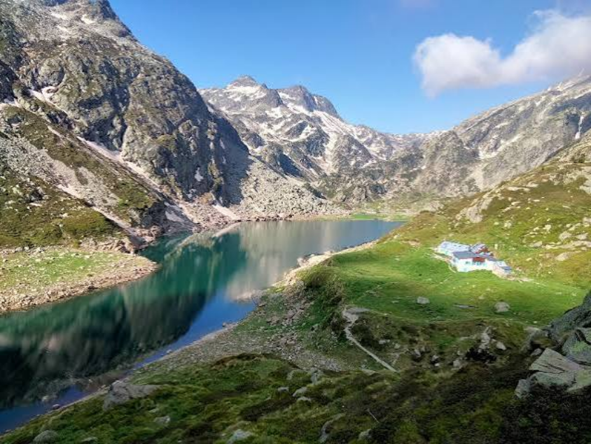

L'Ariège est un territoire authentique mêlant patrimoine, nature et activités de plein air.
Depuis le camping, de nombreux sites sont accessibles en moins d'une heure.
Retrouvez ici les principaux sites.
Foix :
Son château médiéval et ses ruelles pittoresques.
Mirepoix :
Sa belle place à couvert et ses maisons à colombages.
Saint-Lizier :
Cité médiévale classée au patrimoine mondial de l'UNESCO.
Ax-les-Thermes :
Station thermale au cœur des montagnes.
Camon :
Un village fleuri au charme unique.
Grotte de Niaux :
Une grotte exceptionnelle, chef-d'œuvre de l'art pariétal du Paléolithique.
Retrouvez le lien ici.
Mas-d'Azil :
La grotte du Mas-d'Azil et le musée de la Préhistoire, sites emblématiques en Ariège.
Retrouvez le lien ici.
Parc de la Préhistoire :
Voyagez au temps de la Préhistoire et revivez les gestes des hommes préhistoriques.
Retrouvez le lien ici.
Le Château de Foix — 🕐 10h-18h
— 🚗 28 minutes / 25km.
Retrouvez le lien ici.
Le Château de Montségur — 🕐 Consulter le site internet
— 🚗 55 minutes / 55km
Retrouvez le lien ici.
Plateau de Beille :
Espace nordique et activités de pleine nature, en été comme en hiver !
Lac de Bethmale :
Un magnifique lac pour se balader et se détendre en toute saison.
Cascade d'Ars :
Une superbe cascade au départ du village thermal d'Aulus-les-Bains.
Parc Naturel Régional :
Des paysages préservés et exceptionnels, reconnu pour sa diversité patrimoniale, culturelle et paysagère.
Pic du Montcalm :
Le pic du Montcalm est un sommet des Pyrénées françaises culminant à 3 077 mètres.
Découvrez les produits locaux, les producteurs et les spécialités de notre région lors de nos marchés.
Cette liste est non-exhaustive.
N'hésitez pas à vous rapporochez de l'Office du Tourisme. pour plus de renseignements.
Mirepoix — 📍 Place du Maréchal Leclerc — 🕐 7h-13h
— 🚗 31 minutes / 25km.
Pamiers — 📍 Parking Jean-Jaurès — 🕐 6h-13h
— 🚗 6 minutes / 1.5km.
Varilhes — 📍 Place de la Libération — 🕐 8h-12h30
— 🚗 18 minutes / 11km.
Foix — 📍 Place de la Halle Aux Grains — 🕐 7h30-13h30
— 🚗 25 minutes / 22km.
Saint-Jean-du-Falga —📍 Place Jean Jaurès — 🕐 8h-13h
— 🚗 12 minutes / 6km.
Pamiers — 📍 Parking Jean-Jaurès — 🕐 6h-13h
— 🚗 6 minutes / 1.5km.
Mirepoix — 📍 Place du Maréchal Leclerc — 🕐 7h-13h
— 🚗 31 minutes / 25km.
Mazères — 📍 Place de l'Eglise — 🕐 8h-13h
— 🚗 23 minutes / 18km.
Saint-Jean-de-Verges — 📍 Rue de la Mairie — 🕐 9h-12h
— 🚗 23 minutes / 18km.
Saverdun — 📍 Place du Général De Gaulle — 🕐 8h-12h
— 🚗 20 minutes / 17km.
Foix — 📍 Place de la Halle Aux Grains — 🕐 8h-13h
— 🚗 25 minutes / 22km.
Pamiers — 📍 Place de la République — 🕐 6h-14h
— 🚗 6 minutes / 1.5km.
Saint-Pierre-de-Rivière — 📍 Parking du Stade — 🕐 7h30-12h30
— 🚗 32 minutes / 26km.
Verniolle — 📍 Place de la Mairie — 🕐 8h-12h
— 🚗 15 minutes / 8km.
Prayols — 📍 6 Place de la Mairie — 🕐 8h-12h
— 🚗 29 minutes / 30km.
